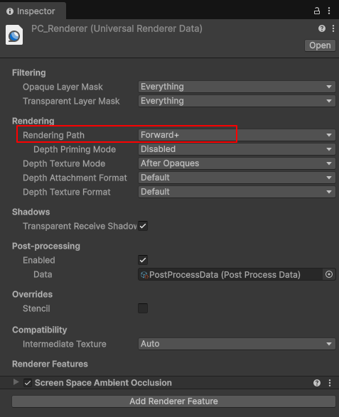

| 유니티 버전에 따라 셰이더 함수가 정상적으로 동작 안할수도 있습니다. 제가 테스트 하는 유니티 버전은 Unity 6(버전 6000.0.64f1) 버전입니다. Project > Settings > PC_Renderer를 보면 Rendering Path를 "Forward+"로 설정 했습니다.  3개의 Point Light와 1개의 Spot Light를 배치하면 라이트 갯수가 1개 이상 넘어와야 한는데 계속 0개로 넘어 왔습니다. GetAdditionalLightsCount() 코드 내부를 따라가 보면 코드가 다음과 같이 되어 있습니다. int GetAdditionalLightsCount()
{ #if USE_FORWARD_PLUS // Counting the number of lights in clustered requires traversing the bit list, and is not needed up front. return 0; #else // TODO: we need to expose in SRP api an ability for the pipeline cap the amount of lights // in the culling. This way we could do the loop branch with an uniform // This would be helpful to support baking exceeding lights in SH as well return int(min(_AdditionalLightsCount.x, unity_LightData.y)); #endif } UniversalForward+에서 라이트의 갯수를 구하는 예는 다음과 같습니다. Shader "Custom/ForwardPlusLightCountDebug"
{ SubShader { Tags { "RenderType"="Opaque" "UniversalPipeline"="true" } Pass { Name "UniversalForward" Tags { "LightMode"="UniversalForward" } HLSLPROGRAM #pragma vertex vert #pragma fragment frag #pragma multi_compile _ _ADDITIONAL_LIGHTS #pragma multi_compile _ _FORWARD_PLUS #include "Packages/com.unity.render-pipelines.universal/ShaderLibrary/Core.hlsl" #include "Packages/com.unity.render-pipelines.universal/ShaderLibrary/Lighting.hlsl" struct Attributes { float4 positionOS : POSITION; }; struct Varyings { float4 positionCS : SV_POSITION; float3 positionWS : TEXCOORD0; }; Varyings vert(Attributes IN) { Varyings OUT; OUT.positionCS = TransformObjectToHClip(IN.positionOS.xyz); OUT.positionWS = TransformObjectToWorld(IN.positionOS.xyz); return OUT; } half4 frag(Varyings IN) : SV_Target { uint lightCount = 0; #if defined(_FORWARD_PLUS) // 1. Unity 6(버전 6000.0.64f1) 매크로가 내부적으로 참조하는 inputData 구조체를 생성합니다. InputData inputData = (InputData)0; // 2. 화면 좌표(UV)를 계산하여 넣어줍니다. (Forward+ 인덱싱에 필수) float4 screenPos = ComputeScreenPos(IN.positionCS); inputData.normalizedScreenSpaceUV = screenPos.xy / screenPos.w; inputData.positionWS = IN.positionWS; // 3. 이제 매크로가 inputData를 찾아 정상 작동합니다. LIGHT_LOOP_BEGIN(IN.positionCS.xy) { lightCount++; } LIGHT_LOOP_END #else lightCount = GetAdditionalLightsCount(); #endif // 라이트 개수 시각화 if (lightCount >= 2) return half4(1, 0, 0, 1); // 빨강 if (lightCount == 1) return half4(0, 0, 1, 1); // 파랑 return half4(0.2, 0.2, 0.2, 1); // 회색 } ENDHLSL } } } 렌더링 패스를 UniversalForward+로 설정하려면 다음과 같이 추가 합니다. 1. Name "UniversalForward" Tags { "LightMode"="UniversalForward" } 2. #pragma multi_compile _ _ADDITIONAL_LIGHTS #pragma multi_compile _ _FORWARD_PLUS 3. // 1. Unity 6(버전 6000.0.64f1) 매크로가 내부적으로 참조하는 inputData 구조체를 생성합니다. InputData inputData = (InputData)0; // 2. 화면 좌표(UV)를 계산하여 넣어줍니다. (Forward+ 인덱싱에 필수) float4 screenPos = ComputeScreenPos(IN.positionCS); inputData.normalizedScreenSpaceUV = screenPos.xy / screenPos.w; inputData.positionWS = IN.positionWS; // 3. 이제 매크로가 inputData를 찾아 정상 작동합니다. LIGHT_LOOP_BEGIN(IN.positionCS.xy) { lightCount++; } LIGHT_LOOP_END 코드의 핵심 포인터는 다음과 같습니다. 1. Forward+ 모드와 LIGHT_LOOP_BEGIN기존의 Forward 방식은 모든 조명을 루프 돌며 하나씩 계산했지만, Forward+는 화면을 타일(Tile)이나 클러스터(Cluster) 단위로 나누어 해당 영역에 영향을 주는 조명 목록을 미리 계산합니다._FORWARD_PLUS 키워드: 이 키워드는 프로젝트의 Render Pipeline Asset에서 'Forward+'가 활성화되었을 때 활성화됩니다. LIGHT_LOOP_BEGIN(pixelPos): Unity 6의 최신 API입니다. 특정 픽셀 위치(IN.positionCS.xy)를 기준으로 그 영역에 할당된 조명 리스트를 가져와 루프를 시작합니다. Unity 6의 LIGHT_LOOP_BEGIN 매크로는 내부적으로 다음과 같은 과정을 거칩니다:
2. InputData 구조체가 필요한 이유유니티 내부의 조명 계산 함수(Lighting.hlsl 등)들은 InputData라는 구조체를 참조하도록 설계되어 있습니다.InputData 내부의 normalizedScreenSpaceUV는 Forward+가 현재 어떤 타일의 조명 데이터를 가져올지 결정하는 인덱스 역할을 합니다. 따라서 InputData inputData = (InputData)0;으로 초기화한 뒤, 화면 좌표(UV)를 직접 계산해서 넣어주어야 매크로가 정상적으로 동작합니다. 3. 주요 코드 로직 분석ComputeScreenPos: 클립 공간의 좌표를 화면 공간의 좌표로 변환합니다. 이를 통해 현재 픽셀이 화면의 어느 위치(0~1 사이의 값)에 있는지 알 수 있습니다.lightCount++: 루프가 실행될 때마다 카운트를 올려, 해당 픽셀에 영향을 주는 추가 광원(Additional Lights)의 개수를 셉니다. #else (Standard Forward): Forward+가 아닐 때는 유니티의 기본 함수인 GetAdditionalLightsCount()를 사용하여 간단하게 개수를 가져옵니다. |